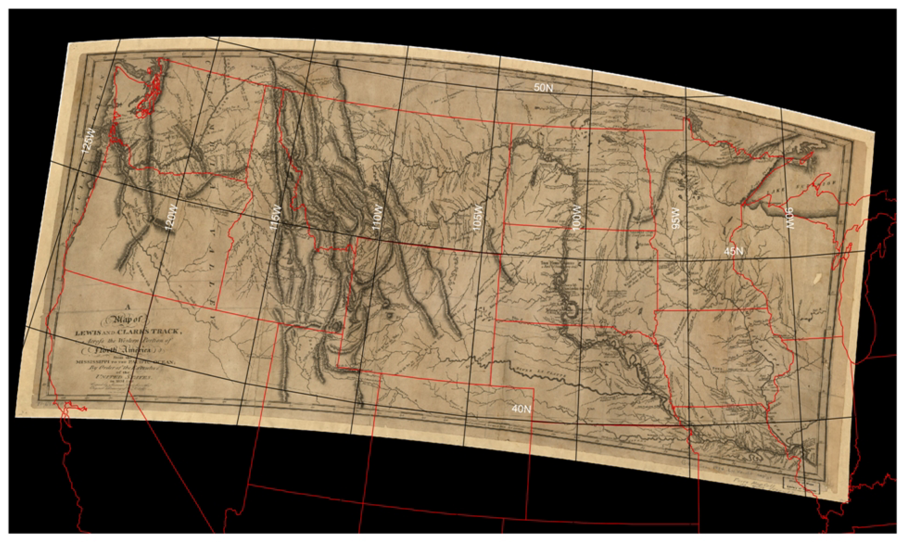

Indigenous Cartography and
Cartography of the Indigenous
Cartography of the Indigenous
Unknown (ca 1721) [Map of the several nations of Indians to the Northwest of South Carolina]. Catawba deerskin map. Retrieved from http://hdl.loc.gov/loc.gmd/g3860.ct000734.
L'isle, Guillaume De (1718) Carte de la Louisiane et du cours du Mississippi ... [map]. Retrieved from http://hdl.loc.gov/loc.gmd/g3701s.ct003028.
Cole, D. G. & I. Sutton (Eds.) (2014). Mapping Native America: Cartographic Interactions between Indigenous Peoples, Government, and Academia (Vol. 1, p. 19). North Charleston: CreateSpace Independent Publishing Platform.
Process Cartography
Gribb, William J, and Cole, Daniel G. (2014). "The Use of GIS to Analyze the Native American Tribal Information from the Lewis and Clark Corps of Discovery" In D. G. Cole & I. Sutton (Eds.), Mapping Native America: Cartographic Interactions between Indigenous Peoples, Government, and Academia (Vol. 1, pp. 142-176). North Charleston: CreateSpace Independent Publishing Platform.
Lewis and Clark Map (1814) Rectified

Gribb and Cole (2014). p 158.
Tribal Populations - Clark 1805

Gribb and Cole (2014). p 160.
Tribal Populations - Lewis 1814
Gribb and Cole (2014). p 161.
Tribal Populations - Combined 1806 & 1814
Gribb and Cole (2014). p 162.
Tribal Locations - RMSE
Gribb and Cole (2014). p 163.